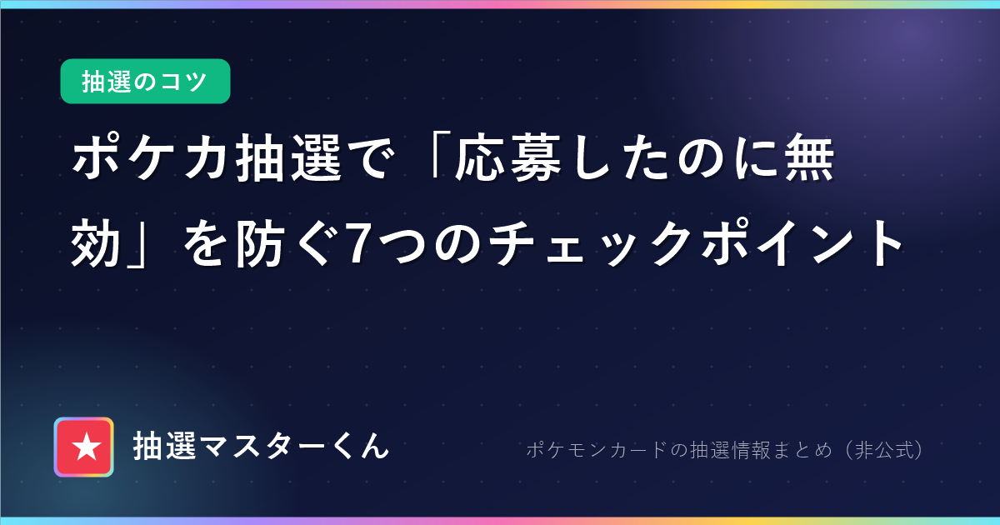

ポケカ抽選で「応募したのに無効」を防ぐ7つのチェックポイント

ポケモンカードの抽選は、ただでさえ当選しにくいものです。それなのに、条件を見落として応募自体が無効になるのは、もったいないですよね。
この記事では、2026年11月に実際に行われた抽選の応募条件をもとに、応募前に確認しておきたいポイントを7つにまとめました。
応募前のチェックリスト
- 会員登録は締切日より前に済んでいるか
- 過去の購入実績の条件はないか
- アプリやポイント・チケットが必要ではないか
- 「1世帯1回」「1人1アカウント」を守れているか
- 登録の住所・名義は正しいか
- 当選後の購入期限と支払い方法を確認したか
- 締切の「時刻」まで確認したか
1. 会員登録は「いつまでに」が決まっていることがある
店舗の会員であることが条件の抽選は多いです。注意したいのは、「○月○日までに登録した会員に限る」と期限が決まっているケースです。
たとえば2026年11月のTCGショップ193の抽選は、「10月31日までに店頭で会員登録した人」が対象でした。抽選の告知を見てから登録しても、間に合わないことがあります。よく使う店舗の会員登録は、新弾の発表前に済ませておくのが確実です。
2. 過去の購入実績が条件になっている
家電量販店や通販サイトでは、一定期間の購入実績を条件にする抽選が増えています。
- コジマのアプリ抽選：2025年11月1日〜2026年11月20日のコジマでの購入累計が5,000円以上
- セブンネットショッピング：2025年11月1日〜2026年11月16日に1円以上の商品を注文・受け取り済み
転売目的の応募を減らすための条件で、普段からその店を使っている人ほど有利になります。ふだんの買い物をよく行く店にまとめておくと、いざというときに応募資格を満たしやすくなります。
3. アプリ・ポイント・チケットが必要な抽選
アプリからしか応募できない抽選や、応募に「チケット」が必要な抽選もあります。
- しまむら：しまむらアプリ会員で、応募チケットが5枚必要
- 古本市場：ふるいちポイントアプリの会員（ゲストは対象外）
チケットやポイントは、すぐには貯まらないことがあります。締切の直前に気づいても間に合わないので、条件は早めに確認しましょう。
4. 「1世帯1回」「1人1アカウント」は必ず守る
多くの抽選で、複数のアカウントでの応募は無効と明記されています。楽天ブックスの抽選では「1世帯1回」とされ、家族が別々のアカウントで応募した場合も無効になる可能性があります。
竜のしっぽのように「1人1アカウント」を明記している店舗もあります。当選の確率を上げようとして重複応募すると、すべて無効になるおそれがあります。
5. 住所・名義は正しく登録しているか
当選後の配送先は、応募時の登録情報から変更できないことがあります。楽天ブックスでは、応募した内容と違う配送先には変更できないとされていました。引っ越した人や、実家と行き来している人は、登録住所を確認しておきましょう。
6. 当選後の購入期限と支払い方法
当選しても、決められた期間内に購入手続きをしないと権利がなくなります。たとえば楽天ブックスの抽選は、当選者の購入期間が11月29日〜12月3日でした。
支払い方法がクレジットカードのみ、受け取りが宅配のみ（コンビニ受け取り不可）といった制限がある場合もあります。当選メールを見逃さないように、迷惑メールフォルダも確認しておきましょう。
7. 締切は「日付」だけでなく「時刻」まで
締切の時刻は店舗によってバラバラです。同じ11月22日締切でも、23:59のところもあれば、23:00や19:30で締め切るところもありました。
「今日の夜に応募しよう」と思っていたら終わっていた、ということにならないよう、時刻まで確認してください。当サイトのトップページでは、締切の時刻と残り時間を表示しています。
まとめ
抽選の当選確率そのものは上げられませんが、無効になる応募を減らすことはできます。よく使う店舗の会員登録とアプリの準備を、新弾の発表前に済ませておくのが一番の対策です。
当サイトは非公式のファンサイトです。価格・日程などは記事公開時点の情報なので、最新の情報は公式サイトや各販売店でご確認ください。